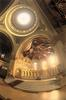

"artefact-metadata-hxa7241-www": {
"title": "Rendering",
"author": "Harrison Ainsworth",
"date": "2008-01-03",
"id": "urn:uuid:5B74228A-EFA6-48F2-9322-4CA108F99118",
"type": "index",
"subtype": "text/html",
"wordcount": 206,
"hashsecure": "sha256:13b82d240af1a71eRendering
some CG rendering-related development projects
MiniLight
 Minimal global illumination renderer
Minimal global illumination renderer- MiniLight is a minimal global illumination renderer: an attempt to distill the essentials, in a clear form. Open-source C, OCaml, Scheme, and others, command-line app. Mac, Linux, and Windows platforms.
Perceptuum 2
 Global illumination renderer
Global illumination renderer- An experimental physically-based renderer, with progressive refinement, frame-coherent/noise-avoiding sampling, and generalised BRDFs. Open-source (GPL) C++.
P3 ToneMapper
- Tone mapper component
- Transforms a high-dynamic-range image into a low-dynamic-range image. Implementation of Ward/Larson's 1997 technique. Open-source (LGPL) C++, command-line tool and dynamic library. Windows and Linux platforms.
P3 WhiteBalancer
 White Balancer component
White Balancer component- Removes the color cast from an image. Command-line tool and dynamic library. Windows and Linux platforms.
C++ Library
 Some graphics-oriented code
Some graphics-oriented code- A casual gathering of quite reusable graphics-oriented C++ code. Open-source (BSD new).
Octree
- General octree framework
- Octree to store any object type, and apply any query algorithm. Uses externalised virtual pattern to be non-intrusive. Mixes genericism and polymorphism for minimal compiled size. Open-source (BSD new) C++ and Ruby. Ruby version here.
P3 Architecture
 Renderer architecture article
Renderer architecture article- Formalised ideas for a new renderer version. But it is rather old now ...